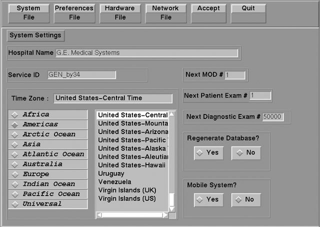
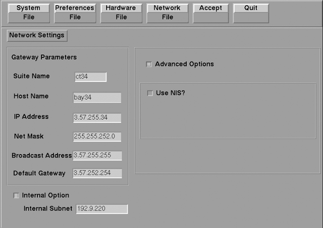

Operating Documentation
Direction 5134894-800, Rev# 9
GOC4 Upgrade Installation & Service Information
Operating Documentation |
| Required Persons | Preliminary Reqs | Procedure | Finalization |
|---|---|---|---|
| 1 |
On the OC, open a Unix shell window.
Enter root as a superuser:
Type: su - <Enter> at the prompt.
Type: #bigguy <Enter> at the password prompt.
Change directory to scripts:
Type: cd /user/g/scripts <Enter> at the root prompt.
Launch the Install Utility:
Type: reconfig <Enter> at the prompt.
The OC displays the Install Utility Window as shown in Illustration 1.
Illustration 1: Install Utility Window

Enter the Configuration Routine:
Using the mouse, click on the [Config] button.
The OC displays the System Configuration - System Settings screen, as shown in Illustration 2.
Illustration 2: System Settings Screen

This screen provides the ability to declare the CT system on a hospital network. Key information such as Host Name, IP Address, Net Mask (for CT systems on a subnet) must be obtained from the hospital network administrator.
Select the [Network] button to display the Network Settings screen as shown in Illustration 3.
Illustration 3: Network Settings Screen

Enter the Suite Name.
The Suite Name is a means of identifying this particular CT system as a part of a group of CT Systems in a suite configuration. This Suite Name will appear on all image headers.
The Suite Name must start with a letter, followed by three alphanumeric characters (total MUST be four characters long). The name of the OC interface will be <Suite Name>_oc and the SBC interface will be <Suite Name>_sbc.
Enter the hospital provided Host Name.
The Host Name identifies the network hostname and AE Title of the CT system.
The Host Name:
MUST NOT be <Suite Name>_oc or <Suite Name>_OC
MUST NOT exceed 16 Characters.
MUST only contain the following characters: A through Z, a through z, 0 through 9, - and _
Enter the hospital provided IP Address.
Enter the hospital provided Net Mask (if the CT system is on a subnet).
Enter the Broadcast Address.
The Broadcast Address should be the same as the IP Address except for the bits of the host id portion (last digit group) set to 1s or 0s depending on the configuration of the network. The standard default is 1s but older SunOS machines used 0s.
Example:
If the IP Address is 192.100.9.17, the Broadcast Address should be 192.100.9.255 if the network is configured to use 1's to specify the broadcast address.
If the network contains genesis based scanners or other SunOS 3.5 or 4.1 computers, the Broadcast Address should be 192.100.9.0.
Enter the hospital provided Default Gateway IP Address in the Default Gateway field (if applicable). If the site network does not use a default gateway, leave the field blank.
Select [NIS] (Yellow Pages database) Advanced Option only if requested by the hospital network administrator as follows:
Select [Advanced Options] button on the Network Settings screen.
Select [Use NIS?] button.
Enter the hospital provided Domain Name.
Record all the CT Network parameters in the Software Installation Procedures Document
Select [Accept] on the System Configuration Screen.
The system loads the application software, OS patches, and kernel changes, and configures the system on both the OC and the SBC.
This loading process takes approximately 15 minutes. While the load is going on, the results are displayed in a shell window, which closes when the loading process is complete. All the window output is logged to a file named:
/var/adm/install.log.YYYYMMDDWWWHHMMSS.
(Where YYYYMMDDWWWHHMMSS is the Date/Time that the loading process was started.)
When the loading process and configuration changes are complete, the system displays a prompt to reboot. Click on [YES] .
The system will automatically login as ctuser after the reboot. Select [OK] on the Autostart Disabled popup message.
To startup Applications, in the console shell window, type startup <Enter>.
No finalization required.